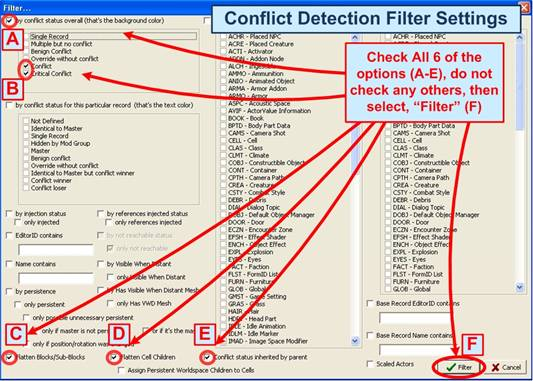
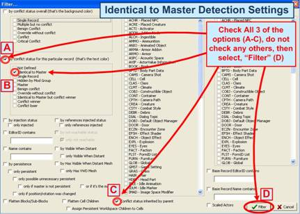

In the following pages we have included several of the more pertinent reference charts and cheat sheets to make them easier and more accessible to you in the future.

The Conflict Detection Filter Settings are shown below:

The record/reference Reach ability Info Filter Settings are shown below:

The Identical To Master Detection filter settings are shown below (Part 1 of Cleaning Process):

The Mod Cleaning filter settings are shown below (Part 2 of Cleaning Process):

The Conflict Detection Load Order Workflow diagram is shown below:

The Conflict Detection Load Order Workflow diagram is shown below: